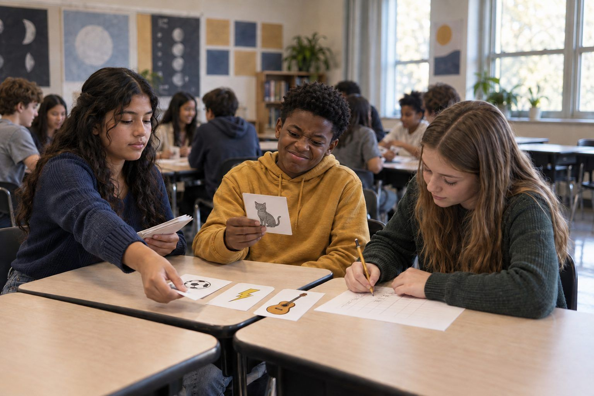

Student learningfor Grades 9–12
Algorithm Autopsy
Students dissect the design features of a fictional social app, trace how each one shapes attention and belief, and redesign the feed for people instead of engagement.

All activities Student learning
Students play a card-based recommendation engine by hand and watch their feed shrink to a few topics, then design ways to take it back.
Recommendation systems don't know what is true, kind, or good for you. They predict what will keep you watching, based on patterns in what you did before. In this game, one student plays the Algorithm and follows a printed rule card to choose posts for a Viewer, scoring every reaction. In five rounds, most feeds narrow to one or two topics, and posts designed to spark strong feelings rise to the top. Students then change one rule and discover what they can and can't control.
Hook
Ask: "Have you ever watched one video and then your whole feed changed?" Take quick stories. Then say: "Today one of you gets to be the algorithm. You don't get to use your opinion. You follow the rules, exactly like a computer does."
Facilitator noteKeep it light. Students don't need to name apps or admit screen time.
Model
Read Rule Card 1 aloud and play one round with a volunteer Viewer in front of the class. The Algorithm deals 4 random post cards. The Viewer reacts honestly to each: Skip (0), Watch (1), Like (2), or Comment/Share (3). Posts marked Spark earn +1 because people linger on things that make them feel strongly. The Recorder writes the topics and points on Handout B. Then show Rule Card 2: next round, the Algorithm deals 3 cards from the top-scoring topic and 1 from the second-highest.
Facilitator noteStress that Viewers should react as themselves. The simulation only works with honest reactions.
Practice
Teams play five rounds with roles fixed, so one Viewer builds one feed. After each round the Recorder totals points by topic and writes which topics are still showing up. When a topic runs out, the Algorithm reshuffles its already-seen cards back in ("feeds repeat"). After Round 5, Recorders report on the class tally: how many topics appeared in Round 1, and how many in Round 5?
Facilitator noteCirculate and ask Algorithms: "Did you check whether that post was true?" The answer is no. The rules never ask.
Debrief
Look at the class tally together. Ask: "What did the Algorithm know about the Viewer?" (Only their reactions.) "What did it not know?" (Whether a post was true, kind, or good for them; their mood; what they wanted to learn.) "Why did Spark posts keep winning?" Connect to AI: "Real recommendation systems are far more complex, but the core idea is the same: they learn patterns from past behavior and predict what will keep you engaged. That's prediction, not understanding."
Facilitator noteWatch for the misconception that the algorithm is "trying to trick you." It's optimizing a goal someone chose. The fair question is: whose goal?
Apply
Teams choose one change and play two more rounds with it. Option A (you change): the Viewer deliberately watches and likes a topic they'd never pick. Option B (the designers change): rewrite Rule Card 2 (for example, "1 card from each topic" or "Spark posts earn no bonus"). Teams record whether the feed widened and one trade-off ("more variety, but more stuff I skipped").
Facilitator noteOption B is computational thinking in action: students modify an algorithm and test the output. Ask them to predict before they play.
Reflect
Students complete Handout C individually. Close by asking two or three students to share the one habit they'll try this week.
Facilitator noteCollect Handout C. Look for answers that link a specific behavior (liking, rewatching, sharing) to what the feed shows next.
This is designed as an unplugged activity: cards, tokens, and a tally on the board simulate the whole system. The physical rule cards make the algorithm's logic visible in a way an app never does.
Recorders enter Round 1 and Round 5 topic counts into a shared spreadsheet so the class sees a live bar chart of narrowing feeds. For a follow-up, students (with family permission, at home) look at why an app says it recommended a post, if it offers that option, and compare the app's explanation to their rule cards. No student accounts are needed in class.
Does it need a screen? The core learning is better unplugged: students can see and hold every rule, which a real app hides. A shared class chart adds a clear picture of the narrowing pattern across many feeds at once.
What you should be able to see or collect if it worked.
Students act as a rule-following recommendation algorithm, track topic counts across rounds, and test a rule change against their prediction.
For homework, students notice one thing their feed (or a family member's, with permission) keeps showing and write one sentence guessing which past action caused it. That observation opens the next lesson on persuasion and sponsored content.